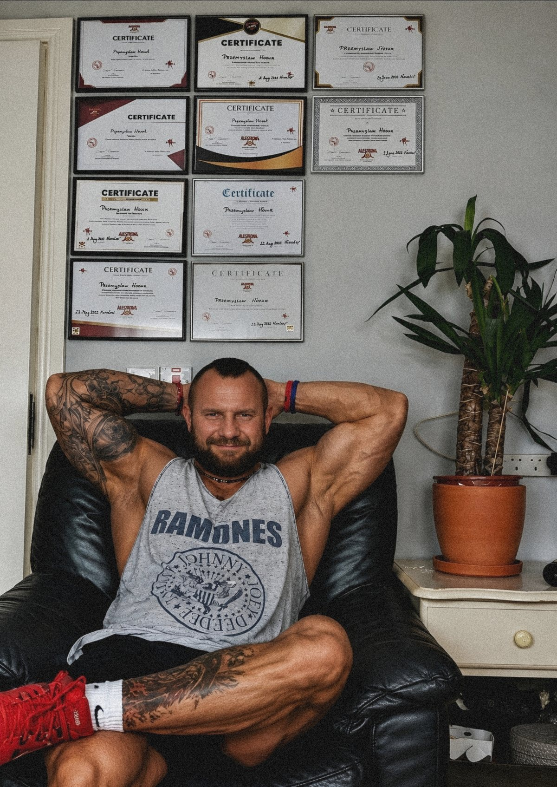
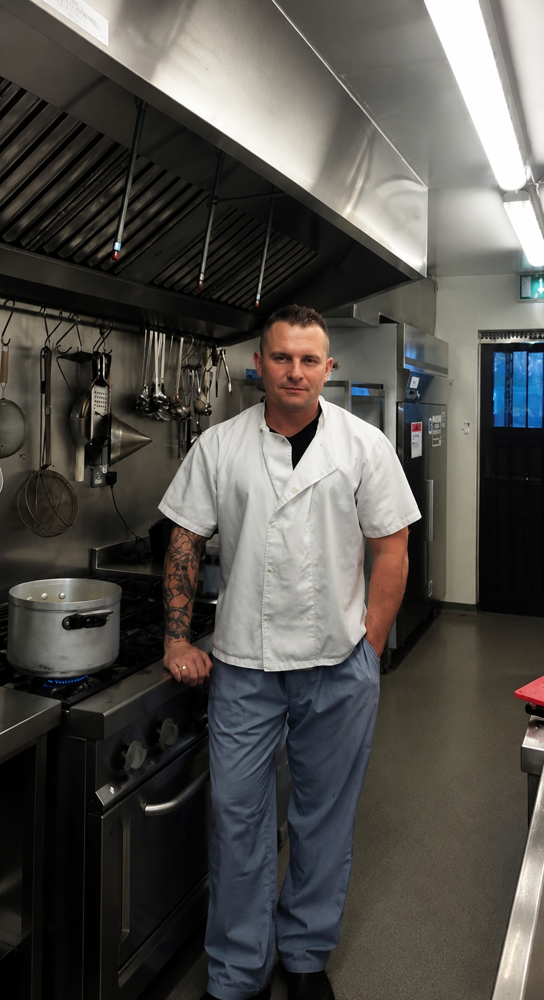
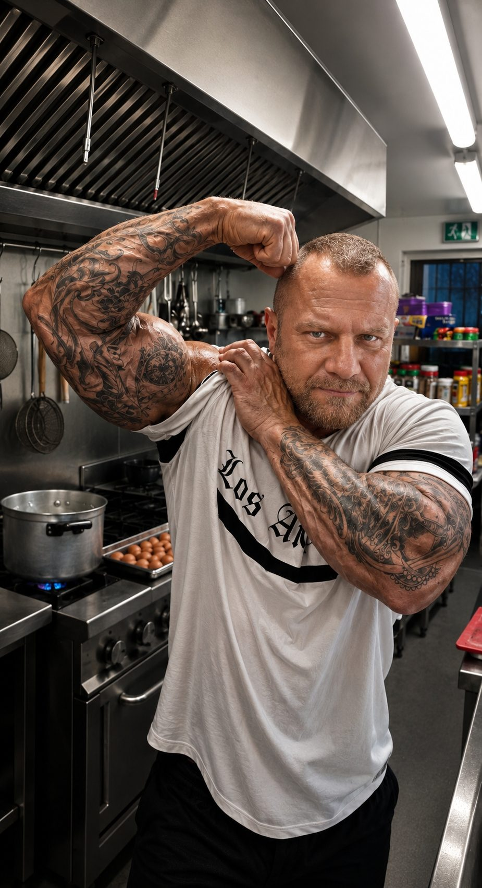
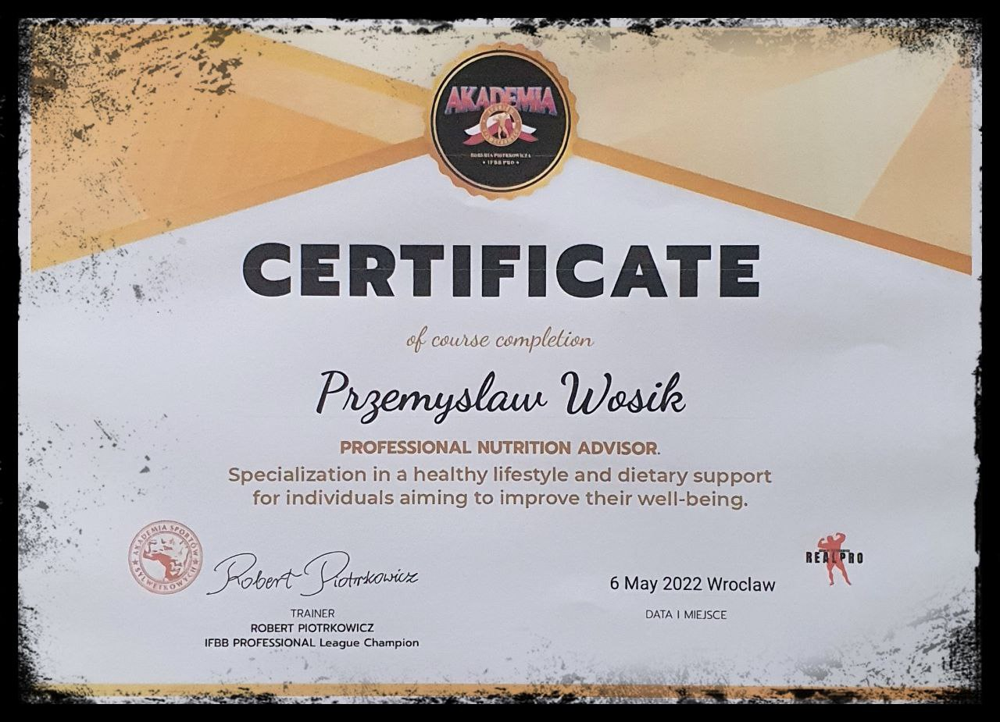
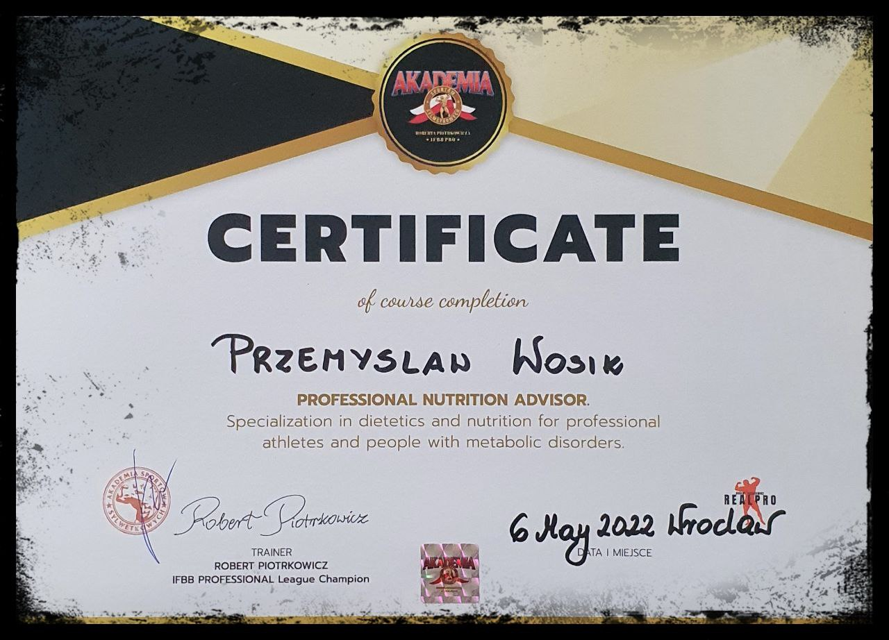
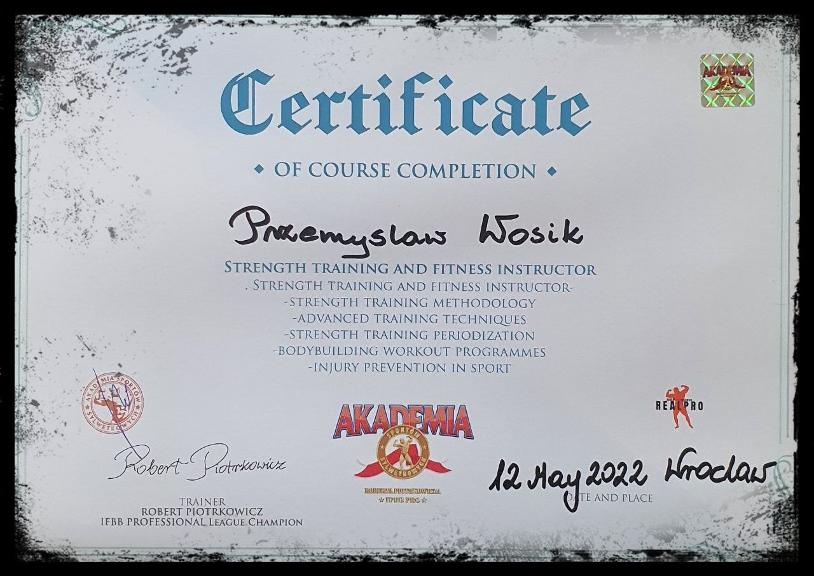
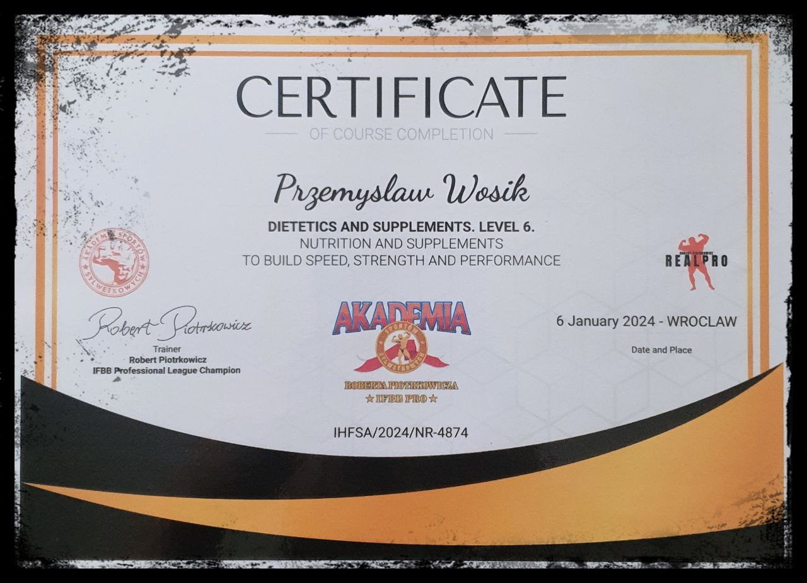
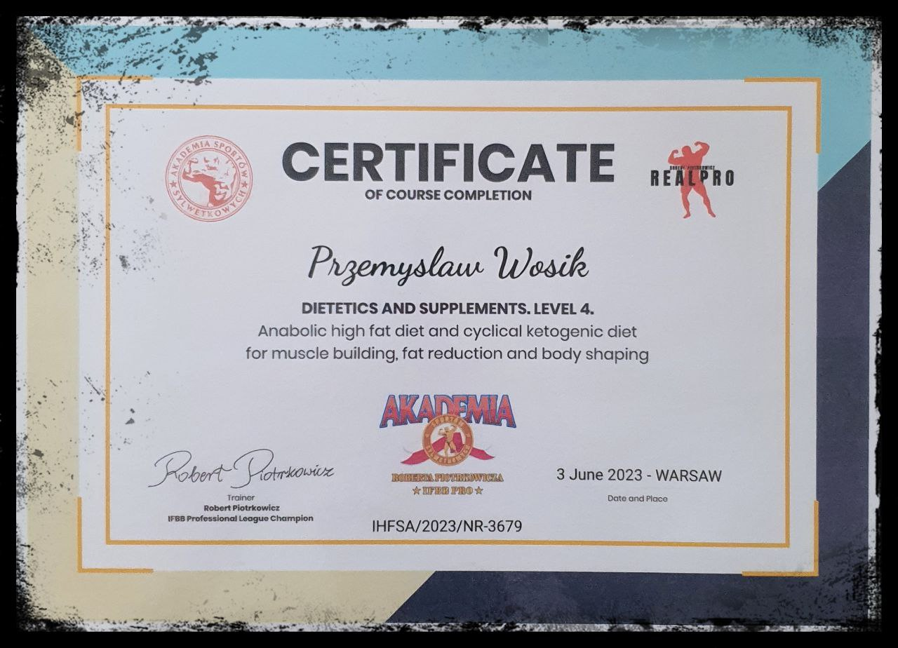
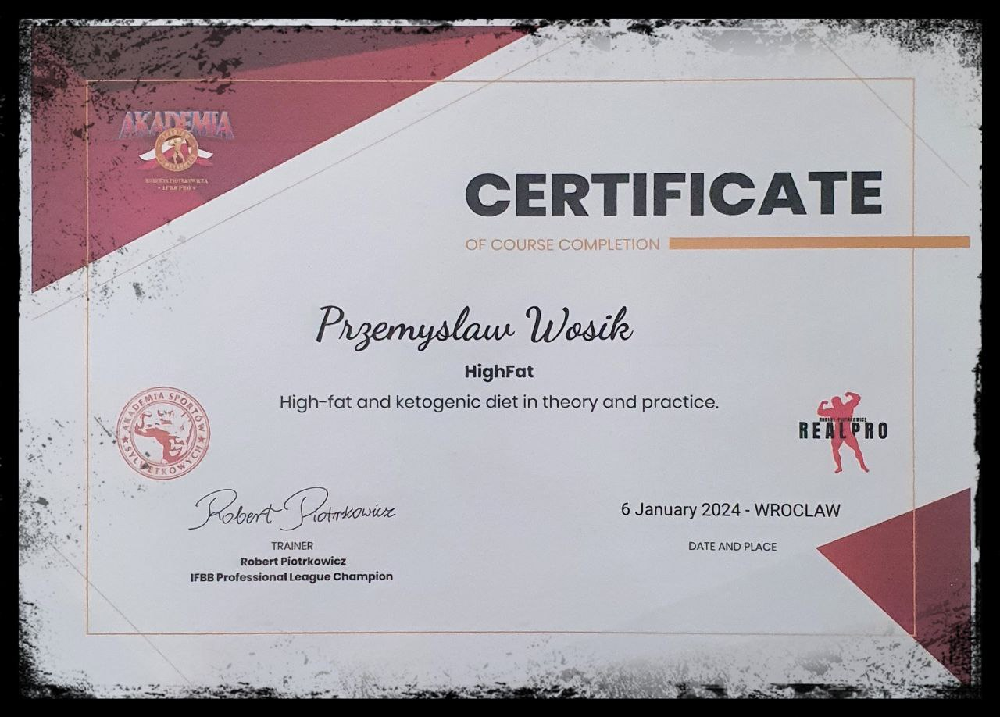
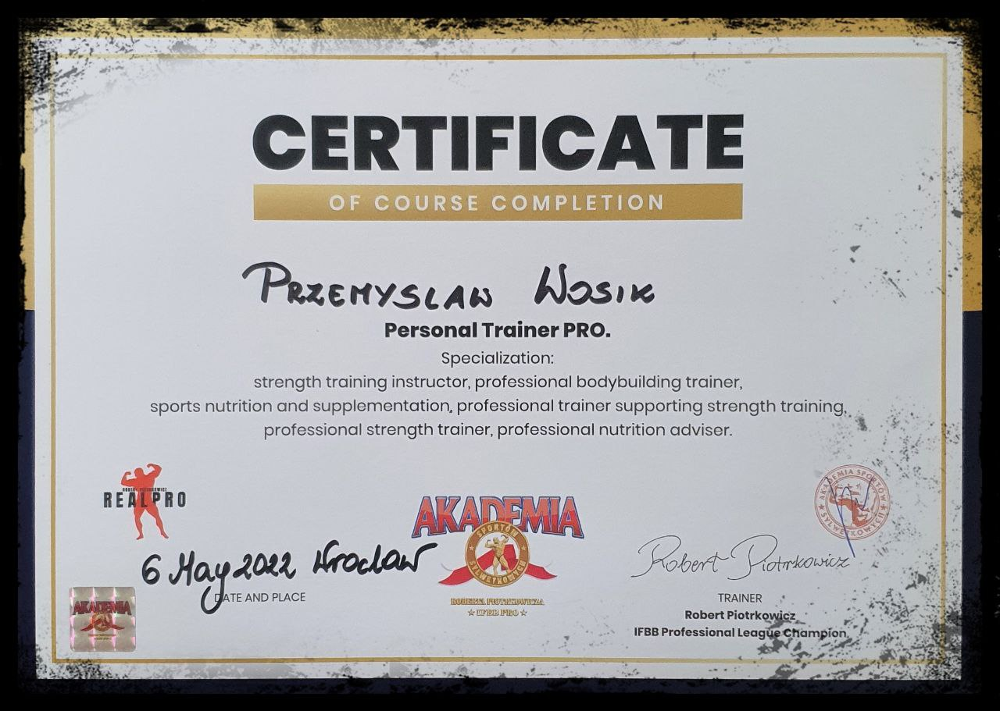

Fundament w badaniach krwi
Nie układam diety 'w ciemno'. Zanim rozpiszę Twój plan, analizuję Twoje wyniki badań laboratoryjnych, aby idealnie uderzyć w przyczynę problemów metabolicznych.
Nie układam diety 'w ciemno'. Zanim rozpiszę Twój plan, analizuję Twoje wyniki badań laboratoryjnych, aby idealnie uderzyć w przyczynę problemów metabolicznych.
Sam wskazujesz, co lubisz. Twój plan powstanie wyłącznie z produktów, które po prostu Ci smakują. Zero zmuszania się do niesmacznych posiłków.
Każdy posiłek ma czarno na białym rozpisane kalorie, białka, węglowodany i tłuszcze. Dopasowane do Twojego dobowego zapotrzebowania i aktywności.
Twój plan, lista zakupów, miejsce na wpisywanie wagi, obwodów i monitorowanie ciśnienia – wszystko masz zawsze pod ręką w smartfonie.
Moja fascynacja dietą wysokotłuszczową i ketogeniczną nie zaczęła się wczoraj – zgłębiam ten temat w teorii i praktyce od lat 2000. Dziś łączę ponad dwudziestoletnie doświadczenie z oficjalną, certyfikowaną wiedzą żywieniową i trenerską zdobytą w Akademii Sportów Sylwetkowych pod okiem mistrza IFBB PRO, Roberta Piotrkowicza. Specjalizuję się w dietetyce sportowej oraz żywieniu w chorobach metabolicznych (Level 6).
Moja największa przewaga? Nie rozpisuję "jałowych" i nudnych diet, ponieważ z zawodu jestem profesjonalnym kucharzem. Moja kulinarna droga rozpoczęła się w 2005 roku w Irlandii, gdzie budowałem warsztat w renomowanych obiektach, takich jak 4-gwiazdkowy Meadowlands Hotel czy Earl of Desmond Hotel w Tralee. W latach 2008-2010 doskonaliłem umiejętności w prestiżowym The Malton Hotel (obecnie 4-gwiazdkowy Great Southern Killarney).
Od 2010 roku nieprzerwanie pełnię funkcję Head Chefa, a w 2016 roku objąłem również stanowisko Catering Managera. Połączenie sportu, zaawansowanej dietetyki z kunsztem Szefa Kuchni sprawia, że Twoje posiłki Keto i Low Carb będą nie tylko perfekcyjnie wyliczone matematycznie, ale przede wszystkim – będą smakować jak dania z doskonałej restauracji.


Pasja od 2010
Forma & Kuchnia 2025Bezpieczne i skuteczne prowadzenie dietetyczne dla osób z insulinoopornością oraz cukrzyków (precyzyjnie niski indeks glikemiczny).
Wprowadzenie w stan ketozy w teorii i praktyce z dbałością o Twoje samopoczucie i zdrowie.
Doświadczenie w przygotowaniu formy w oparciu o zaawansowaną periodyzację i suplementację celowaną.







Celowo przytyłem do 113 kg, żeby udowodnić Ci jedną rzecz: Twój metabolizm da się naprawić.

Wrzesień 2023 – Start Eksperymentu. Moment podjęcia decyzji i celowego odpuszczenia treningów.

16 Czerwca 2024 – Szczyt Wagi (113 kg). Solidna masa, uczucie ciężkości, brak energii i realne problemy z codzienną mobilnością.

6 Września 2024 – Efekt Końcowy (99 kg). Zaledwie 2,5 miesiąca później. Wynik połączenia precyzyjnego Keto, Intermittent Fasting i treningu sylwetkowego.

Kolaż Porównawczy Przed / Po.
Wypełniasz kwestionariusz, podajesz ulubione smaki i przesyłasz mi wyniki badań krwi.
Obliczam dokładne zapotrzebowanie kaloryczne oraz makro pod Twój cel sylwetkowy.
Otrzymujesz skrojony pod Ciebie plan żywieniowy oraz dostęp do aplikacji mobilnej.
Jesteśmy w stałym kontakcie przez WhatsApp. Reaguję na zmiany i na bieżąco modyfikuję dietę.
Rozpocznij miesiąc pełnej opieki dietetycznej
Realne wyniki i opinie osób, które odzyskały kontrolę nad swoim zdrowiem i sylwetką.
"Pan Przemysław zrozumiał mój tryb życia i ułożył plan, który pasował do mojej kuchni. Po 5 miesiącach jestem w miejscu, o którym marzyłam."
"Proste posiłki, niedrogi tryb. Bez wymyślania za to na ludzko. Pan Przemysław udowodnił, że dieta może być smaczna i skuteczna."
"Chciałam schudnąć przed ślubem. Pan Przemysław ułożył mi plan na 10 tygodni i osiągnęłam swój cel. Suknia leżała idealnie! 💍"
"Dieta Keto poprawiła mi wyniki badań – cholesterol, cukier, wszystko wróciło do normy. Lekarz był zaskoczony!"
"Na keto naprawdę szybko leci! W 2 miesiące zrzuciłem 11 kg i czuję się najlepiej od lat."
"Idealnie dobrany plan – jem to co lubię! Pan Przemek wziął pod uwagę wszystkie moje ulubione produkty, czym byłam zachwycona. 🥑"